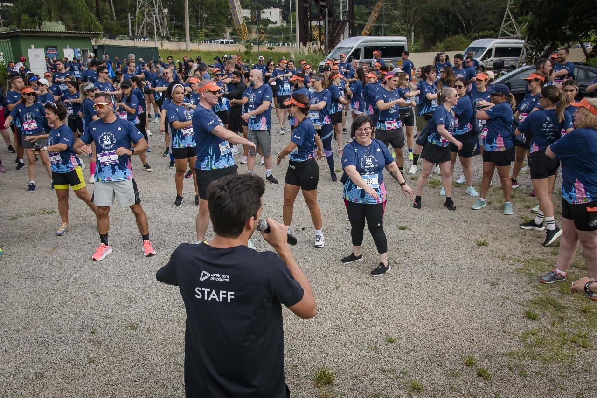
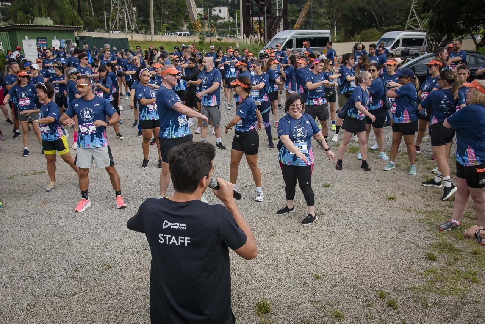

I'm a paragraph. Click here to add your own text and edit me. It’s easy. Just click “Edit Text” or double click me to add your own content and make changes to the font.
Quando criança, Messi enfrentava um problema hormonal que afetava seu crescimento. A família
não tinha como bancar o tratamento, mas o Barcelona viu seu talento e ofereceu ajuda. Aos 13
anos, ele se mudou para a Espanha e começou sua trajetória no clube. De garoto franzino a
lenda viva, Messi conquistou tudo: Champions, Bola de Ouro e, finalmente, em 2022, a Copa do
Mundo com a Argentina. Um gigante em todos os sentidos.De garoto franzino a
lenda viva, Messi conquistou tudo: Champions, Bola de Ouro e, finalmente, em 2022, a Copa do
Mundo com a Argentina. Um gigante em todos os sentidos.
Quando criança, Messi enfrentava um problema hormonal que afetava seu crescimento. A família
não tinha como bancar o tratamento, mas o Barcelona viu seu talento e ofereceu ajuda. Aos 13
anos, ele se mudou para a Espanha e começou sua trajetória no clube. De garoto franzino a
lenda viva, Messi conquistou tudo: Champions, Bola de Ouro e, finalmente, em 2022, a Copa do
Mundo com a Argentina. Um gigante em todos os sentidos. De garoto franzino a
lenda viva, Messi conquistou tudo: Champions, Bola de Ouro e, finalmente, em 2022, a Copa do
Mundo com a Argentina. Um gigante em todos os sentidos.
Pelé era apenas um garoto pobre de Três Corações, em Minas Gerais, quando começou a encantar com a bola nos pés. Aos 17 anos, o mundo se rendeu ao seu talento na Copa de 1958, quando marcou dois gols na final e deu ao Brasil seu primeiro título mundial. Ao longo da carreira, foram mais de mil gols, três Copas do Mundo e o título eterno de “Rei do Futebol”.
Nascido na Ilha da Madeira, Cristiano saiu de casa aos 12 anos para tentar a sorte no Sporting, em Lisboa. Superou saudades, críticas e dificuldades até ser contratado pelo Manchester United. Conhecido por sua dedicação extrema aos treinos, ele virou sinônimo de superação e trabalho duro. Com cinco Champions League e cinco Bolas de Ouro, CR7 construiu sua carreira com suor, talento e fome de vitória.
 
